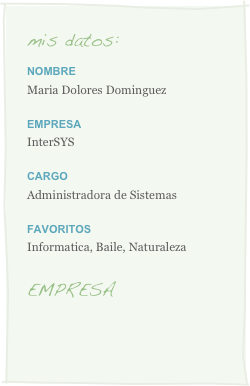

¿quién soy?

Resumen
Más de cuatro años de experiencia como administrador de sistemas informáticos. Buena respuesta profesional en equipos o actividad individual. Excelentes capacidades para llevar registros escritos con gran precisión. Habilidad para localizar errores y solucionarlos rápidamente. Capacidad de trabajo metódico, incluso bajo presión.
Experiencia Laboral
Desde noviembre de 2015 hasta la actualidad: administrador de sistemas informáticos en Centro New Technology MAX, Sevilla.
-
•Instalación, soporte y mantenimiento de servidores y sistemas.
-
•Planificación y respuesta a interrupciones del servicio y problemas.
-
•Actualizaciones de sistemas operativos y aplicaciones, así como cambios de configuración.
-
•Control de sistemas y programas informáticos, con añadido, modificación y borrado de cuentas de usuario y contraseñas.
-
•Realización de copias de seguridad.
Desde enero de 2013 hasta octubre de 2015, administrador de sistemas informáticos en Adventax Industries, Sevilla.
-
•Instalación y mantenimiento de sistemas y acceso a usuarios.
-
•Programación de secuencias de comandos para sistemas de gestión.
-
•Creación de políticas de seguridad.
-
•Actualización de sistemas y control de averías, en hardware o software.
-
•Realización de tareas rutinarias de mantenimiento.
